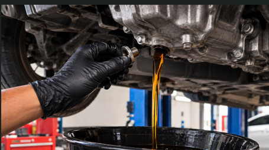
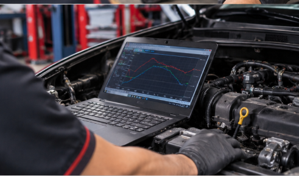

PREMIUM MOTORCYCLE CARE
Professional maintenance and repair services to keep your motorcycle performing at its best.
COMPLETE CARE FOR YOUR MOTORCYCLE
At STR Garage, we provide reliable motorcycle maintenance and repair services. Our services are designed to maintain engine performance, improve riding comfort, and help prevent unexpected problems.
OIL CHANGE
Regular oil replacement to maintain engine lubrication, reduce friction, and protect important engine components from excessive wear.

Keep Your Engine Protected
Engine oil plays an important role in maintaining motorcycle performance. Over time, oil quality decreases due to heat, friction, and engine usage. Regular replacement helps keep the engine clean and properly lubricated.
Our Service Includes:
- Draining old engine oil.
- Replacing it with suitable engine oil.
- Checking oil levels after replacement.
- Inspecting for visible oil leaks.
- Checking the oil filter when applicable.
GENERAL TUNE UP
Routine inspection and adjustment to maintain engine efficiency, smooth operation, and comfortable riding.

Restore Your Motorcycle Performance
Tune up is a maintenance service that focuses on checking, cleaning, and adjusting important motorcycle components. This service helps identify minor problems before they become more serious.
Our Service Includes:
- Cleaning the throttle body or carburetor.
- Inspecting the air filter condition.
- Checking and cleaning the spark plug.
- Inspecting the fuel system.
- Checking engine idle and performance.
- Inspecting brakes and other basic components.
ENGINE SERVICE
Detailed engine inspection and repair to identify problems and restore motorcycle engine performance.

Professional Engine Inspection
Engine service focuses on identifying and addressing engine problems through detailed inspection and necessary repairs. The service depends on the motorcycle's condition and the level of damage found.
Our Service Includes:
- Inspecting engine components.
- Checking engine compression.
- Inspecting cylinder and piston conditions.
- Checking valve and combustion systems.
- Identifying unusual engine sounds.
- Inspecting possible oil leaks.
- Repairing or replacing damaged components when necessary.